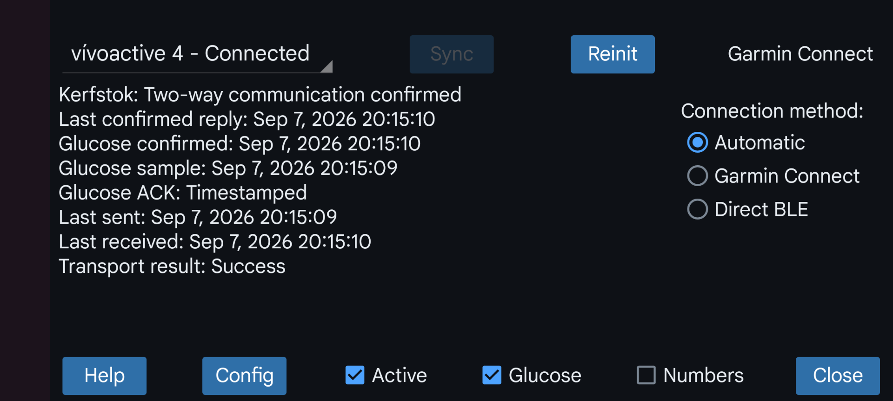

Kerfstok (https://apps.garmin.com/en-US/apps/b6348ccc-86d8-4780-8013-d9e19fed5260 (see also https://www.juggluco.nl/Kerfstok/index.html) is a watch app for Garmin sport watches that allow third party apps. Since 1.6.0 also for watches without touchscreen. Kerfstok has the following uses:
Enter numbers and exchange them with Juggluco;
Displays the stream glucose value received from Juggluco;
Displays this glucose value during sport, while also showing speed and distance. The activity will be recorded and can be displayed in Garmin's connect app.
This watch app can connect via Bluetooth with Juggluco to exchange amounts and continually display your current glucose value.
Active: Connect this watch with Juggluco.
Numbers: Enter numbers on this watch and exchange numbers with Juggluco. Multiple watches running Kerfstok can receive the current glucose value at the same time, but only one of those watches can be used for viewing and entering numbers.
Glucose: determines if glucose values are sent to the watch.
Connection method: Determine how to communicate with the watch:
Garmin Connect: Connect with the watch via the Garmin Connect app.
Direct BLE: Bypass the Garmin Connect app, instead of this directly connect via Low Energy Bluetooth with the watch. This can be used even when the Garmin Connect app is not installed, but can also be used while the Garmin Connect app is running. It is even possible never to use the Garmin Connect app, by pairing the watch via the Android Bluetooth settings.
Automatic: first sending via Garmin Connect is tried and when it doesn’t work try Direct BLE. The method actually used is displayed above “Connection method”.
Config: set Dark mode, Shortcuts and ID.
Sync: send data to the watch and receive data from the watch.
Reinit: Initialize the connection again.
Try some or all of the following when the connection with the watch doesn’t work:
Press reinit;
On the phone, turn Bluetooth off and on;
On the watch, turn Bluetooth off and on;
Switch the connection method and possibly switch it back later;
Reboot watch;
Reboot phone;
Earlier you sometimes needed to start Garmin Connect, force stop it and start it again or even clear data in Garmin Connect or reinstall Garmin Connect. This should no longer be necessary with Juggluco 11.0.0 and later.